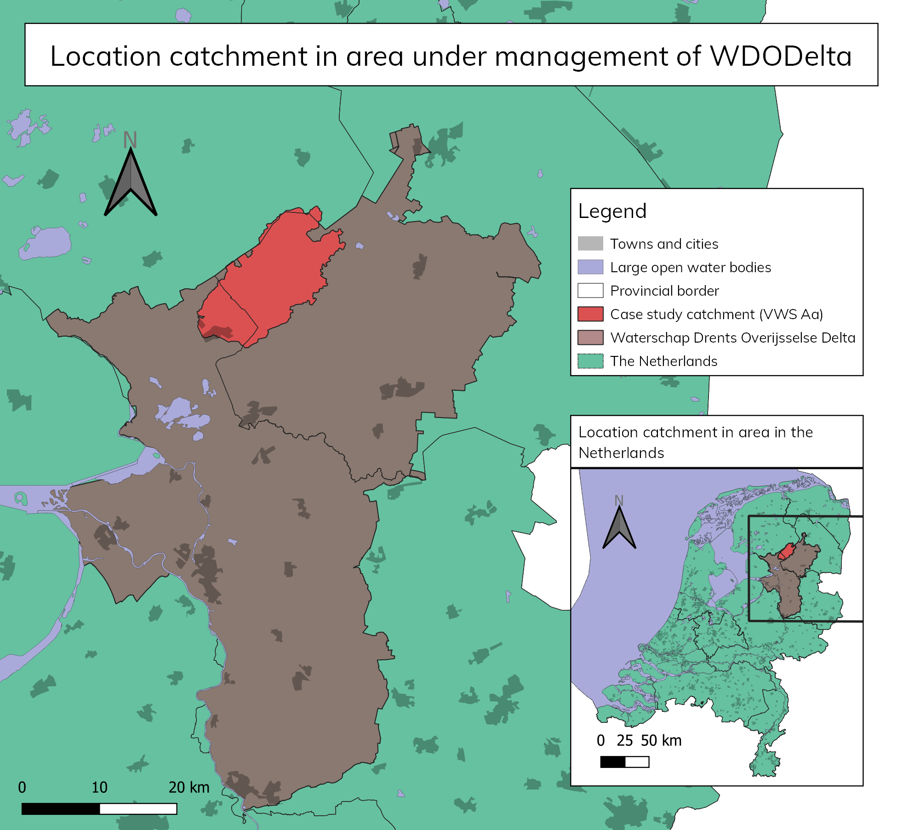
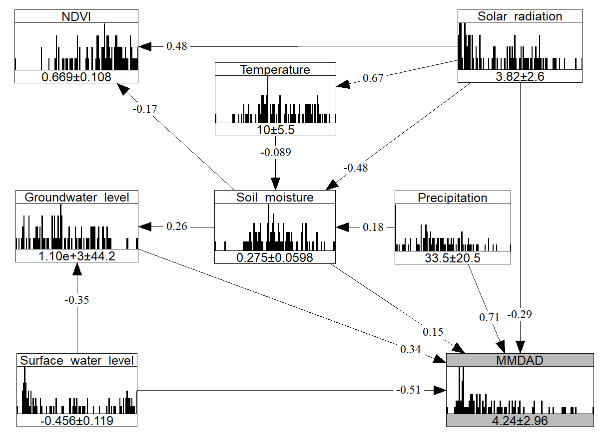

Click on the image to see a static variant which shows the construction of a copula.
...
The case study of the thesis was done in a catchment in the north of the
Netherlands:

For this case study, I decided to predict the maximum monthly daily average discharge of the river. For
this cause, I determined the most favourable Bayesian Network layout, given variables' relations and
prediction strength:

I tested this model with a Python package that I had written for this thesis, called
copulabayesnet.
The final result had a Kling-Gupta efficiency, which is a hydrologic metric, of 0.79 (out of 1). That is
a very decent score
and was significantly higher than that of the currently in-use SOBEK model.
The predictions and measurements of the monthly maximum daily average discharges.
Serious game & paper: Hydro Hero
With a group of five, I developed a so-called serious game for children to learn about
water management, especially water quality. In the game made for a course, called Hydro Hero, the
protagonist
has to remove all the disadvantageous matter from the water whilst leaving in the benificial
of neutral matter. While figuring out what matter belongs in which catogery,
children learn about their effects on the water. The reason behind this, is also taught
by letting breaking up the game with minigames.
We tested the game scientifically and proved that children indeed learn what belongs in the water and what
doesn't from this game
and we also found out that they very often knew the reason why this was the case. After the course, with the
help of some others,
I wrote a paper about our findings, which got published in
conference proceedings of a
education game alliance.
A bit of humour in grim times: Covid cases Tour de France Profile
In the summer of 2021, during the Tour de France, I found the resemblence of the chart of the weekly rolling
average Covid cases per day to the elevation profile of a mountain stage in the
Tour de France quite remarkable. After finding a nice Dutch Covid cases source and with some Matplotlib
tweaking, an almost identical plot was quickly built.
For my job, I wrote a wrapper around MLFlow, which is a tool that allows for easily logging machine learning
experiments. I found out that
there are some drawbacks to MLFlow, of which I tackled the following:
1. Collaboration on a central locations is quite difficult with the original package.
2. Setting up the logging could be made easier and quicker.
3. Basic logging of standard packages could be made even easier.
In the package, called MLFlowCollab,
setting up basic logging is way easier and saves a bit of time, collaboration is made way easier if a shared
folder is available
and scikit-learn logging has been turned into a oneliner, while keeping a lot of flexibility.